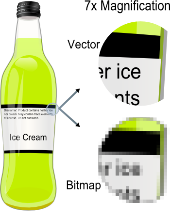
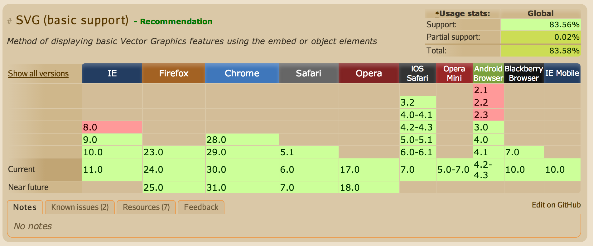
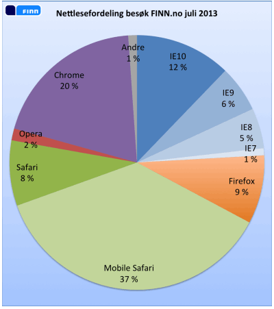

Fremtidsrettet webgrafikk med SVG
BartJS - Februar 2013
Stian Veum Møllersen / @mollerse
open.bekk.no
Intro til SVG
Vektorgrafikk
Hvert element defineres som en vektor eller en geometrisk figur
Vektor vs Punktgrafikk

SVG på web
caniuse.com

(╯°□°）╯︵ ┻━┻
Legacy browsers
Good news

SVG og JavaScript
Dynamisk generert og programmatisk tilgjengelig grafikk
Kilder til SVG
Håndskrevet
<circle cx="25" cy="25" r="20" fill="green" />
var shape =
svgDocument.createElementNS(svgns, "circle");
shape.setAttributeNS(null, "cx", 25);
shape.setAttributeNS(null, "cy", 25);
shape.setAttributeNS(null, "r", 20);
shape.setAttributeNS(null, "fill", "green");
Eksportert
Photoshop, Indesign, Inkscape — Designere
Inkludere SVG assets
<img src="some.svg" />
Inkludere SVG assets
<img src="some.svg" />
<object data="some.svg" type="image/svg+xml" />
Jobbe med SVG assets
var svgObject =
document.getElementById("object").contentDocument;
var circle = svgObject.getElementById("circle");
circle.addEventListener("click", function() {
console.log("clicked");
});
Inline SVG
Jobbe med inline SVG
Ikke ulikt vanlig DOM manipulasjon
Liberaries (⌐■_■)
Generelle bibliotek
Raphaël
Generelle bibliotek
Snap.svg
Spesialiserte bibliotek
SVG og JavaScript
med Snap.svg
Path syntax
W3 Spec
| Command | Name |
|---|
| M | moveto |
| Z | closepath |
| L | lineto |
| H | horizontal lineto |
| V | vertical lineto |
| C | curveto |
| S | smooth curveto |
| Q | quadratic Bézier curveto |
| T | smooth quadratic Bézier curveto |
| A | elliptical arc |
Paths.js
Source
var Path = require('paths/path');
var path = Path()
.moveto(10, 20)
.lineto(30, 50)
.lineto(25, 28)
.qcurveto(27, 30, 32, 27)
.closepath();
Andre grafiske elementer
- <ellipse>
- <line>, <polyline> og <polygon>
- <text>
- <image>
Eksisterende elementer
Hentes inn med AJAX
Snap.load('some/url.svg', function(svg) {
paper.add(svg);
});
Animerte paths #1
Source
NB: Ytelse
window.requestAnimationFrame() er din venn!
SVG vs Canvas/WebGL
Elementer vs Handlinger
Spørsmål, tilbakemeldinger, kjeft etc